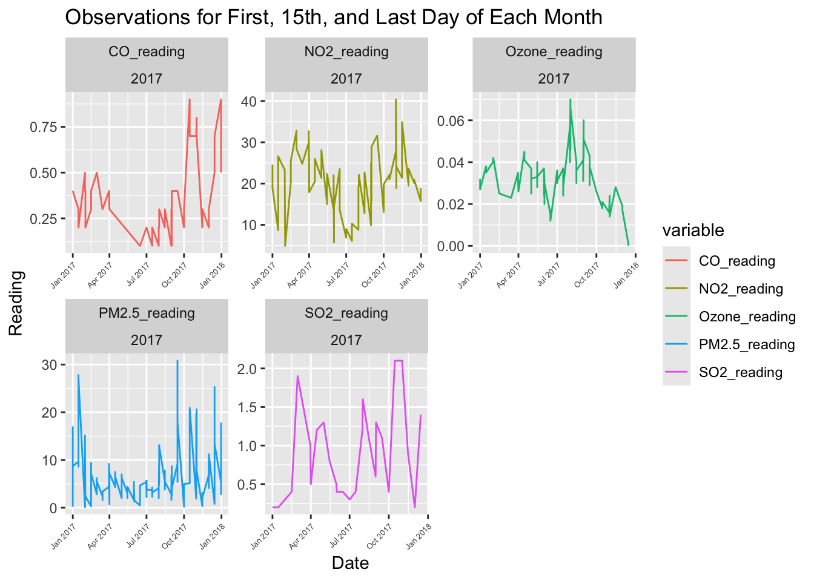
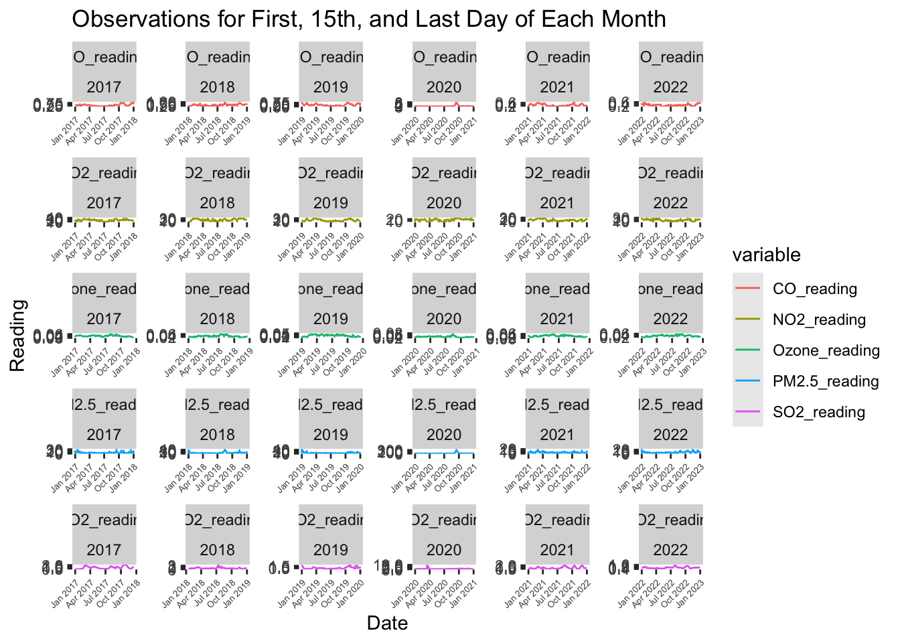
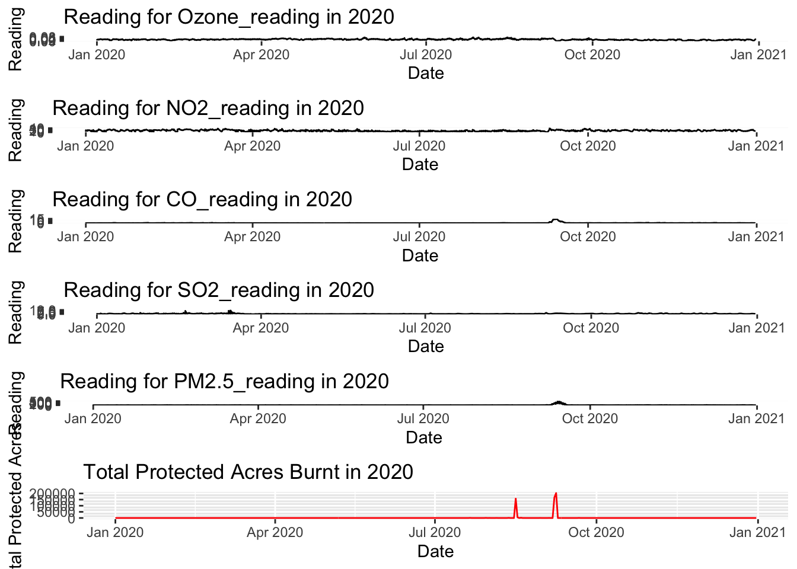

#data from csvs (will need to change location stuff)fires_full <-read_csv("air_data/fires_full.csv")
Rows: 2191 Columns: 2
── Column specification ────────────────────────────────────────────────────────
Delimiter: ","
dbl (1): tot_ProAcres
date (1): ReportDate
ℹ Use `spec()` to retrieve the full column specification for this data.
ℹ Specify the column types or set `show_col_types = FALSE` to quiet this message.
# In the proposal we said we'd plot observations for the first, 15th, and last day of each month across one year, and observe whether there is a stark increase in pollutant concentrations during the wildfire season (July-September) and have multiple lines to see which pollutants in particular increase. #instead of separate lines, separate graphs for unit/interpretability reasons#data for first 15th and last day of monthpollutants_FML <- pollutants_pdx_melt %>%mutate(day =day(Date)) %>%filter(day ==1| day ==15| day ==max(day)) %>%select(-day) #2017, considering trends in just one year, can be altered for whichever yearggplot(pollutants_FML %>%filter(year ==2017), aes(x = Date, y = reading, color = variable)) +geom_line() +facet_wrap(~ variable + year, scales ="free") +labs(title ="Observations for First, 15th, and Last Day of Each Month",x ="Date", y ="Reading") +theme(axis.text.x =element_text(angle =45, hjust =1, size=5))

#on one super mega huge giant ggplot to see how this holds up across yearsggplot(pollutants_FML, aes(x = Date, y = reading, color = variable)) +geom_line() +facet_wrap(~ variable + year, scales ="free") +labs(title ="Observations for First, 15th, and Last Day of Each Month",x ="Date", y ="Reading") +theme(axis.text.x =element_text(angle =45, hjust =1, size=5))

#okay... #this is a visualization with all the pollutants over all the years compared to wildfires. surely there's something to be gained from this. maybe not tho.plots <-lapply(unique(pollutants_pdx_melt$variable), function(var) {ggplot(data = pollutants_pdx_melt[pollutants_pdx_melt$variable == var, ], aes(x = Date, y = reading)) +geom_line() +labs(title =paste("Reading for", var),x ="Date", y ="Reading")})fire_plot <-ggplot(data = fires_full, aes(x = ReportDate, y = tot_ProAcres)) +geom_line(color ="red") +labs(title ="Total Protected Acres Burnt",x ="Date", y ="Total Protected Acres")library(gridExtra)
Attaching package: 'gridExtra'
The following object is masked from 'package:dplyr':
combine
#this is that same nonsense but just for 2020:pollutants_2020 <- pollutants_pdx_melt %>%filter(year(Date) ==2020)plots <-lapply(unique(pollutants_2020$variable), function(var) {ggplot(data = pollutants_2020[pollutants_2020$variable == var, ], aes(x = Date, y = reading)) +geom_line() +labs(title =paste("Reading for", var, "in 2020"),x ="Date", y ="Reading")})fire_plot <-ggplot(data = fires_full[fires_full$year ==2020, ], aes(x = ReportDate, y = tot_ProAcres)) +geom_line(color ="red") +labs(title ="Total Protected Acres Burnt in 2020",x ="Date", y ="Total Protected Acres")grid.arrange(arrangeGrob(grobs = plots, ncol =1), fire_plot, heights =c(4, 1))

#summary statistics#correlation in 2020 between protected area burnt and each pollutant readings#aggregating data + mergingpollutant_small20 <- pollutants_2020 %>%group_by(Date, variable) %>%summarise(reading =mean(reading, na.rm =TRUE)) %>%ungroup()
`summarise()` has grouped output by 'Date'. You can override using the
`.groups` argument.